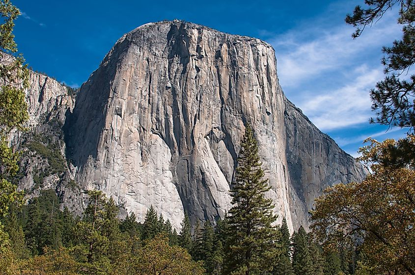
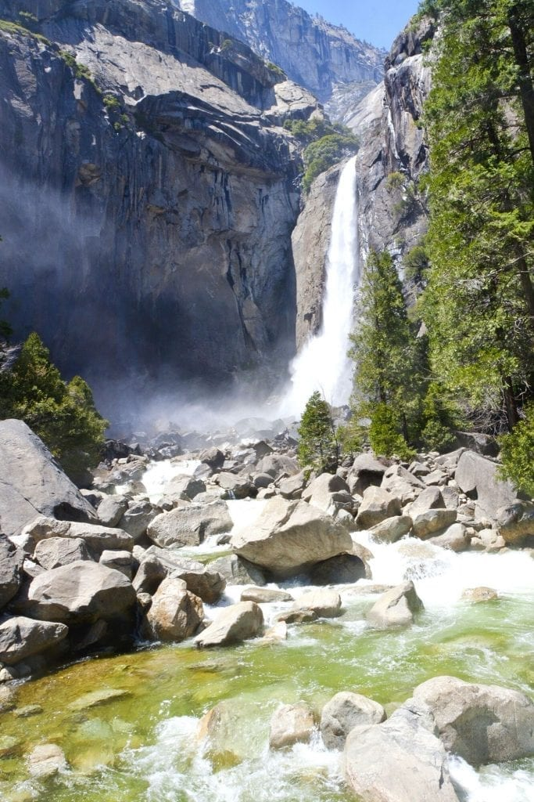

概览：何时看瀑布
优胜美地国家公园内瀑布数量众多。观赏瀑布的最佳时节为春季—— 此时积雪大量消融，河流径流量较大，径流量峰值一般出现在五、六月。
包括优胜美地瀑布在内的部分瀑布，到八月往往只剩下涓涓细流，甚至完全断流； 晚秋的降雨会让部分瀑布水量恢复，让瀑布暂时重焕生机；而在冬夜， 瀑布岩壁边缘会凝上厚厚的霜冰。
丰水期走近瀑布，水雾翻涌、水声轰鸣，极具冲击力； 枯水期的瀑布，则另有一番清幽静谧的风味。
冰川，瀑布的"雕塑家"
冰川正是塑造优胜美地园内众多瀑布的"雕塑家"。河流先切割出深邃的峡谷， 后续冰川进一步拓宽、削陡、加深峡谷，塑造出高落差的河谷。
倘若没有冰川，这些溪流江河虽依旧存在，但只会顺着山坡形成短小跌水， 而非如今从绝壁倾泻而下的悬崖飞瀑。
下文列举优胜美地部分知名瀑布，除末尾两处外，其余均坐落于优胜美地谷； 优胜美地谷以及公园其他区域还遍布大大小小各式瀑布。
观赏时间对照表
下表汇总园内十处知名瀑布的落差、径流时段与观赏点位，方便你按出行月份筛选目标。 其中末尾两处（瓦帕马、奇努阿尔纳）位于优胜美地谷之外。
| 瀑布 | 落差 | 径流时段 | 观赏点位 |
|---|---|---|---|
| 优胜美地瀑布 | 2,425 英尺 （740 米） |
约 11 月–7 月 5 月峰值 |
优胜美地村、优胜美地谷酒店周边；1 英里环形步道直达下瀑布底部 |
| 哨兵瀑布 | 约 2,000 英尺 （610 米） |
约 3–6 月 5 月峰值 |
南侧公路哨兵滩野餐区沿线、四英里步道起点附近；莱迪格草甸 |
| 缎带瀑布 | 1,612 英尺 （490 米） |
约 3–6 月 5 月峰值 |
驶入谷中、过布里德韦尔瀑布转弯处之后，路边即可看见，设有停车观景点 |
| 马尾瀑布 | 1,000 英尺 （305 米） |
约 12 月–次年 4 月 | 酋长岩野餐区（优胜美地谷酒店西侧北侧公路），或野餐区东侧路边停靠点 |
| 面纱瀑布 | 620 英尺 （190 米） |
全年有水 5 月峰值 |
瓦沃纳公路（41 号公路延伸段）、大橡树平地公路（120 号公路延伸段）隧道附近 |
| 内华达瀑布 | 594 英尺 （180 米） |
全年有水 5 月末–6 月峰值 |
冰川点远眺；或经弗纳尔瀑布沿陡峭步道抵达 |
| 弗纳尔瀑布（春之瀑） | 317 英尺 （97 米） |
全年有水 5 月末–6 月汛期 |
冰川点远眺；或走陡峭步道抵达瀑布脚下 |
| 伊卢伊特瀑布 | 370 英尺 （113 米） |
全年有水 5 月末峰值 |
全景步道（距冰川点数英里）视野最佳；公路上看不到 |
| 瓦帕马瀑布 | 1,400 英尺 （427 米） |
全年有水 5 月峰值 |
奥肖内西大坝停车场；或走起伏步道至瀑布近前 |
| 奇努阿尔纳瀑布 | 约 2,200 英尺 （670 米） |
全年有水 5 月峰值 |
公路上看不到，唯一途径是走陡峭步道抵达瀑布顶端 |
优胜美地瀑布

优胜美地瀑布
因处在优胜美地谷的中心地区而得名。它是世界最高瀑布之一， 实际由三段水体构成：上层瀑布（436 米）、 中部跌水（206 米）、下层瀑布（98 米）。
冬季可在上层瀑布底部看到冰锥景观；4–6 月可观赏奔涌的 洪峰径流与"飞流直下两千尺"的壮观景象。
观赏点位：优胜美地谷多处地点都可以观赏该瀑布， 优胜美地村、优胜美地谷酒店周边视野尤佳。有一条 1 英里环形步道 可直达下优胜美地瀑布底部；环形步道东侧（接驳车站到瀑布底部）设有 无障碍通道，可供轮椅通行。
您也可选择徒步登顶优胜美地瀑布，该线路强度高，需要耗费一整天时间 （可查阅山谷日间徒步清单）。
哨兵瀑布

哨兵瀑布
因紧靠着哨兵岩而得名，瀑布坐落于优胜美地谷南侧、哨兵岩西侧。
它由多级跌水接续组成，流水如下楼梯般分段落下， 形成错落有致的阶梯观感，单段落差 50–500 英尺（15–150 米）不等。
观赏点位：南侧公路哨兵滩野餐区沿线、 四英里步道起点附近；也可到山谷对岸的莱迪格草甸， 或是徒步优胜美地瀑布步道途中眺望。
缎带瀑布

缎带瀑布
因下落如缎带一般的细长形态而得名。
水量峰值时，它呈现出有别于其他悬崖飞瀑的静谧、柔和景象，别有一番风味。
观赏点位：驾车驶入优胜美地谷，经过 布里德韦尔瀑布转弯处之后，路边就可以看见缎带瀑布； 道路旁设有停车观景点。
马尾瀑布

马尾瀑布
水流从酋长岩东侧倾泻而下，勾勒出一道绮丽的弧线。
每年 2 月中下旬，落日的橙金色霞光映照瀑布， 瀑布会呈现如同烈焰燃烧的奇观——正如大漠孤烟下、奔腾于荒野之上的烈马尾巴， 马尾瀑布也因此闻名。最佳观赏位置就在酋长岩东侧。
观赏点位：可将车辆停放于酋长岩野餐区 （位于优胜美地谷酒店西侧的北侧公路），或是野餐区东侧的路边停靠点， 在公路边即可观赏。
面纱瀑布

面纱瀑布
坐落于公园入口旁，这大多是游客驶入优胜美地谷第一眼见到的瀑布。
春季融雪时期，径流量水声轰鸣如雷；其余时节水流轻柔飘逸， 呈现出其独特的温婉景象。
观赏点位：瓦沃纳公路（41 号公路延伸段）、 大橡树平地公路（120 号公路延伸段）的隧道附近， 以及进入山谷途中的标识停车场，都可以观赏瀑布。 多条短途步道数分钟即可抵达瀑布底部，其中一条配备无障碍通行设施。
内华达瀑布

内华达瀑布
落差 594 英尺（180 米），是默塞德河上游最雄浑的一段， 水流从宽阔的花岗岩台地倾泻而下。
观赏点位：冰川点可以远眺内华达瀑布； 通往冰川点的公路开放时段大致为 5 月末至 11 月， 公路开放期间观景点设有无障碍步道。 也可沿着陡峭步道，经过弗纳尔瀑布继续向前徒步抵达此处 （查阅山谷日间徒步清单）。
弗纳尔瀑布

弗纳尔瀑布（春之瀑）
落差 317 英尺（97 米）。全年有水；夏末水量衰减， 水流会分化成一至三股；5 月末至 6 月为汛期。
观赏点位：冰川点能够远眺弗纳尔瀑布； 冰川点公路开放时间大致 5 月末至 11 月， 公路开放期间观景点配备无障碍步道。 也可以走陡峭步道徒步抵达瀑布脚下（查阅山谷日间徒步清单）。
其他值得一看的瀑布
以下三处位于优胜美地谷之外，或需长距离徒步、或无法从公路看见， 因此容易被忽略，但各有其独特之处。
伊卢伊特瀑布
落差 370 英尺（113 米），全年有水，5 月末水量峰值。 游客会在徒步去往弗纳尔瀑布的途中遇见它，但最佳观赏点位在 全景步道上、距离冰川点数英里。该瀑布无法从公路看见， 只能走陡峭徒步线路抵达。
瓦帕马瀑布
落差 1,400 英尺（427 米），全年有水，5 月水量峰值。 专程前往赫奇赫奇谷观赏它的游客较少，少有人见证过这条 轰鸣澎湃的瀑布的雄健英姿。可从奥肖内西大坝停车场观赏， 也可以走起伏不平的步道徒步至瀑布近前。
奇努阿尔纳瀑布
落差约 2,200 英尺（670 米），全年有水，5 月水量峰值。 位于瓦沃纳区域，顺着岩石迂回蜿蜒， 游客无法在同一个视角饱览完整瀑布全貌。公路上看不到该瀑布， 唯一观赏途径是走陡峭步道徒步抵达瀑布顶端。
观赏建议与安全须知
时间与装备
- 选对月份：想看最壮观的瀑布，请锁定 5 月至 6 月；若行程只能在 8 月以后，优先选择面纱瀑布这类全年有水的瀑布。
- 早上出发：瀑布观景点在上午 10 点后迅速拥挤，且清晨光线更适合拍摄，还能避开谷内停车高峰。
- 带好防水装备：走雾径务必穿防滑徒步鞋、带轻便雨衣；手机与相机建议用防水袋。
- 备足饮水：雾径与约翰·缪尔步道爬升集中，即使春季也容易脱水，请按每人每小时 0.5 升准备。
- 留意雪线：早春高海拔路段可能仍有积雪残冰，出发前查询步道开放状况。
安全守则
- 务必走在步道上：这里岩石极度湿滑，即便看起来干燥也极易打滑，请始终待在步道与护栏内。
- 石阶与观景台岩石常年湿滑，请扶稳扶手，避免在湿石上跳跃或奔跑。
- 河谷溪涧水流湍急，水温极低，落水后极难自救——请勿下水、勿靠近水边岩石拍照。
- 请勿翻越任何护栏或警示围栏——每年都有人因此发生严重事故。
- 瀑布附近水雾弥漫，能见度与地面摩擦都会下降，请放慢脚步。
- 雷雨天气请立即离开瀑布底部与空旷岩壁区域。
- 野生动物（包括黑熊）会在步道周边活动，请保持距离并妥善存放食物。